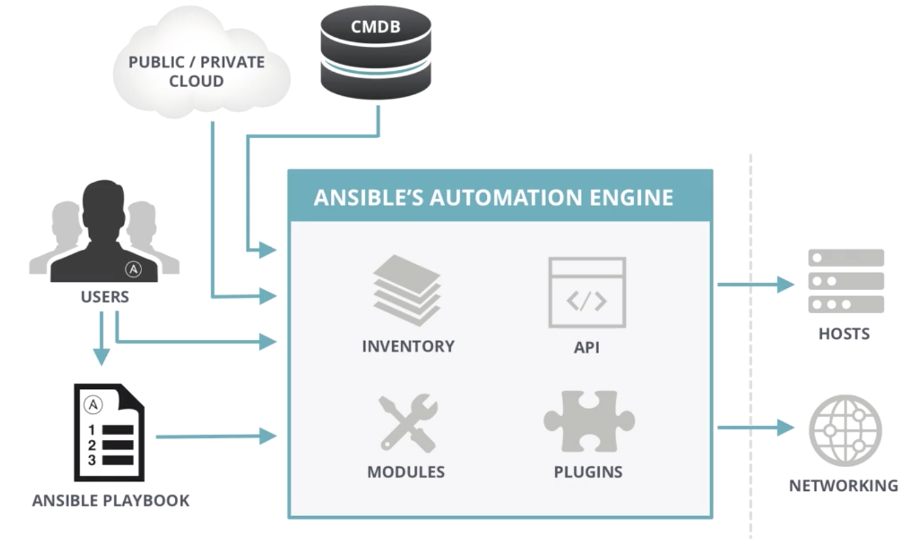

L1 Ansible Introduction
1、What is Ansible
It's a simple automation language that can perfectly describe an IT application infrastructure in Ansible Playbooks.
It's an automation engine that runs Ansible Playbooks.
Ansible Tower by Red Hat is an enterprise framework for controlling, securing and managing your Ansible automation with a UI and restful API.
2、Why Ansible
2-1 Simple
- Human readable automation
- No special coding skills needed
- Tasks executed in order
- Get executed quickly
2-2 Powerful
- App deployment
- Configuration management
- Workflow orchestration
- Orchestrate the app life cycle
2-3 Agentless
- Agentless architecture
- Uses OpenSSH $ WinRM
- No agent to exploit or update
- More efficient & more secure
3、What Can I use ansible to do
- Config management
- App Deployment
- Provision
- Continuous Delivery
- Security & Compliance
- Orchestration
4、Ansible Architecture

4-1 MODULES
- Modules control systems resources, packages, files or nearly anything else
- Over 450 ship with Ansible
- Enable regular users to easily work with complex systems
- But more on these later...
5、Where go get it and how to install
5-1 Os packages
- EPEL
- APT
5-2 Also from
- Pypi
- Sources (via Github)
6、Ansible lanaguage basics
6-1 playbooks
- Plain-text YAML files that describe the desired state of something
- Human and machine readable
- Can be used to build entire application environments
6-2 variables
There are many different ways to source variables
- Playbooks
- Files
- Inventories(group vars, host vars)
- Command line
- Discovered variables(fact)
- Ansible Tower
6-3 Inventories
- Static lines of servers
- Ranges
- Other custom things
- Dynamic list of servers: AWS, Azure, GCP. etc
6-4 Basic of playbooks
- Playbooks contain plays
- Plays contain tasks
-
Tasks call modules
-
Tasks run sequentially
-
Handlers are tiggered by tasks, and are run once, at the end of plays
---
- name: install and start apache
hosts: web
remote_user: justin
become_method: sudo
become_user: root
vars:
http_port: 80
max_clients: 200
tasks:
- name: install httpd
yum: name=httpd state=latest
- name: write apache config file
template: src=srv/httpd.j2 dest=/etc/httpd.conf
notify:
- restart apache
- name: start httpd
service: name=httpd state=running
handlers:
- name: restart apache
service: name=httpd state=restarted
6-5 MODULES
There are over 450 Ansible-provided modules that automate nearly every part of your environment
Standard structure:
module: directivel=value directive2=value
7、Ansible Simple Usage
7-1 Advanced Ansible Playbook Capabilities
Ansible has many different ways to alter how Playbooks run:
with items, failed when, changed when, until, ignore errors
http://docs.ansible.com/ansible/playbooks_specialiopics.html
Ansible Roles are a special kind of Playbook that are fully self-contained with tasks, variables, configurations templates, and other supporting files.
http://docs.ansible.tom/ansible/playbooks_roles.html
7-2 Using AD-Hoc Commands
Runs a command or calls module directory from the command line, no Playbook required
$ ansible <inventory> <options>
$ ansible web -a /bin/date
$ ansible web -m ping
$ ansible web -m yum -a "name=openssl state=latest"
7-3 Running Playbooks
Runs a playbook on selected inventories from the command line
$ ansible-playbook <options>
$ ansible-playbook my-playbook.yml
7-4 CHECK MODE -C
Dry-run for ad-hoc commands and Playbooks
Validate Playbook runs before making state changes on target systems
$ ansible web -C -m yum -a "name=httpd state=latest"
$ ansible-playbook -C my-playbook.yml
7-5 Ansible Tower

8、Ansible Galaxy
- Source of community and vendor-provided Ansible Roles to help you get started faster.
- Learn from others that are automating with Ansible.
- Galaxy Roles are often directly runnable with little modification.